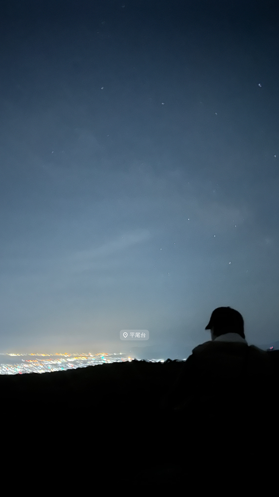

🌃 夜景巡り


最近の趣味は、夜中の人が少ない時間に有名な場所の夜景を見に行くこと。
人がいないと静かで、心が落ち着く！！
🌠 行ったことある夜景スポット
- 平尾台
- 織幡神社
- 油山展望台
- 米の山展望台
- 愛宕神社
その中の、平尾台と織幡神社に行った時の写真を載せた如にょ✨
みんなのおすすめの、絶景スポットおしえてほしい！！
最近の趣味は、夜中の人が少ない時間に有名な場所の夜景を見に行くこと。
人がいないと静かで、心が落ち着く！！
その中の、平尾台と織幡神社に行った時の写真を載せた如にょ✨
みんなのおすすめの、絶景スポットおしえてほしい！！